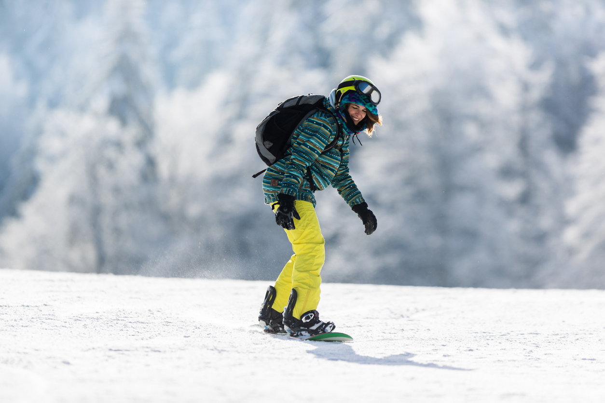
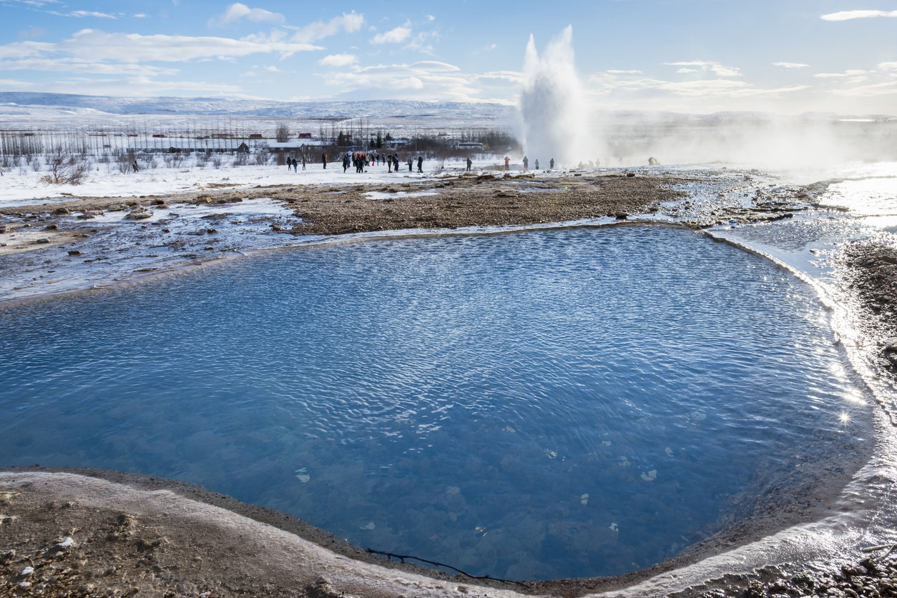

This is your time to truly 'Breath'
Welcome to Wyrm’s Region Lodge – Your Nordic Winter Escape
Step into the heart of Scandinavia at Wyrm’s Region Lodge, where snow-blanketed peaks, crisp mountain air, and warm Nordic hospitality create a winter experience like no other. Whether you’re here to conquer the slopes, unwind in our steaming thermal pools, or explore the rich traditions of the North, every moment at Wyrm’s Region is crafted for adventure, relaxation, and unforgettable memories. Let the magic of the season guide you—your journey begins here.

Skiing
Experience the magic of winter at our premier environmentally conscious ski resort, where snow-covered peaks, world-class slopes, and cozy alpine charm come together for the perfect getaway. Whether you're a seasoned skier or a first-time visitor, you'll find breathtaking scenery, expertly groomed trails, and welcoming lodges nestled in the heart of nature. After a day on the slopes, unwind with traditional Nordic cuisine and the soothing warmth of a crackling fire. Your ultimate winter adventure starts here.

Thermal-Pools
Immerse yourself in pure relaxation at our scenic thermal pool, where warm, mineral-rich waters soothe tired muscles and melt away stress after a day on the slopes. Surrounded by snowy landscapes and crisp mountain air, these springs offers a serene retreat with stunning views of the Scandinavian wilderness. Whether you're watching the northern lights dance above or enjoying a quiet evening soak, our thermal pool is the perfect way to unwind and embrace the magic of winter. As you relax, experience the essence of Nordic culture through traditional sauna rituals, locally inspired spa treatments, and the timeless connection to nature that defines life in the North.